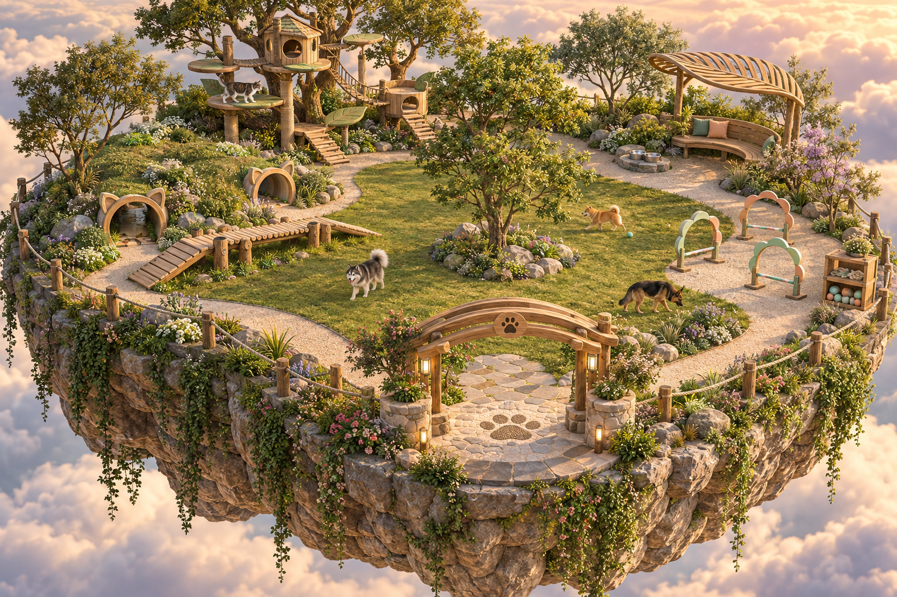
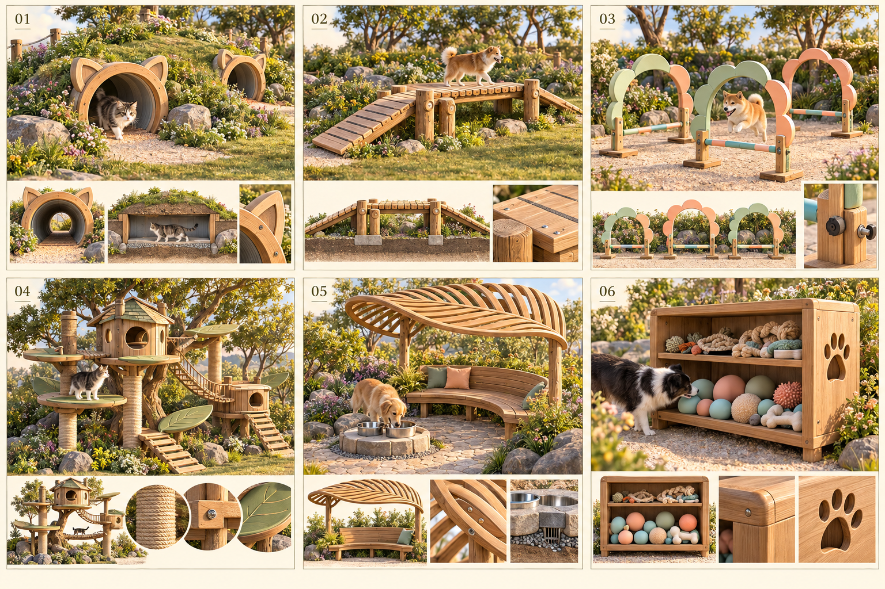
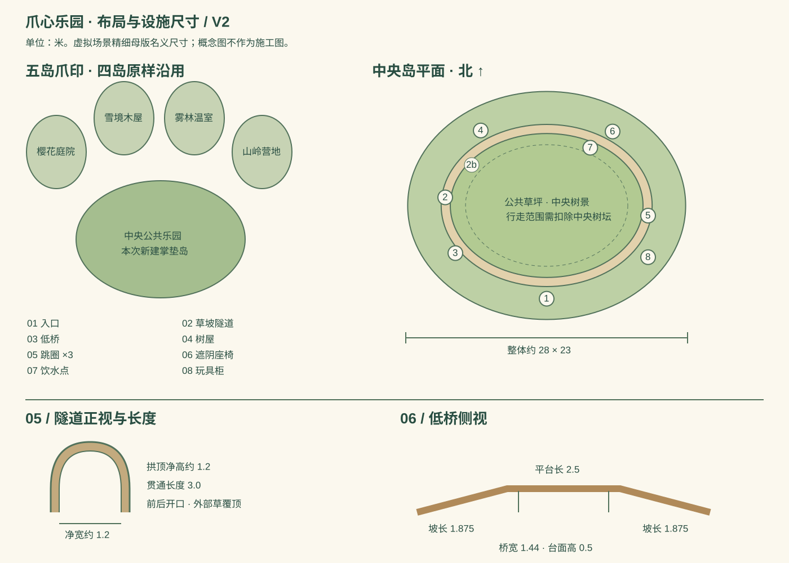
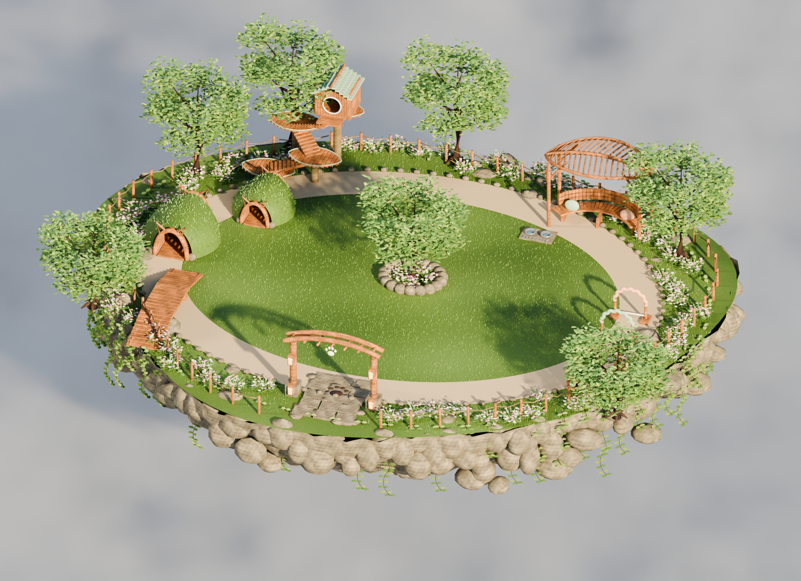
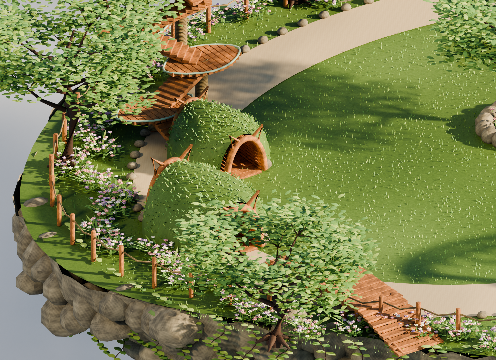
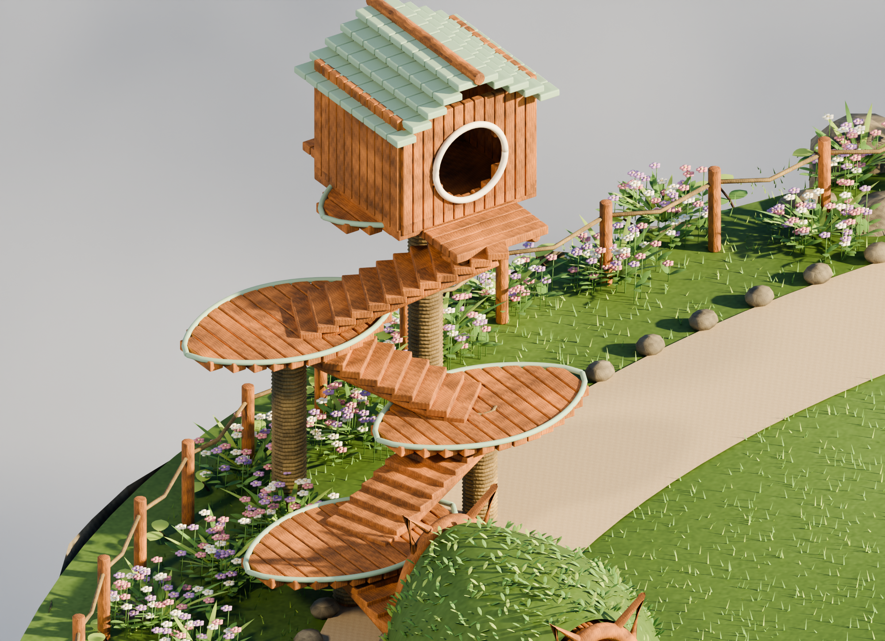
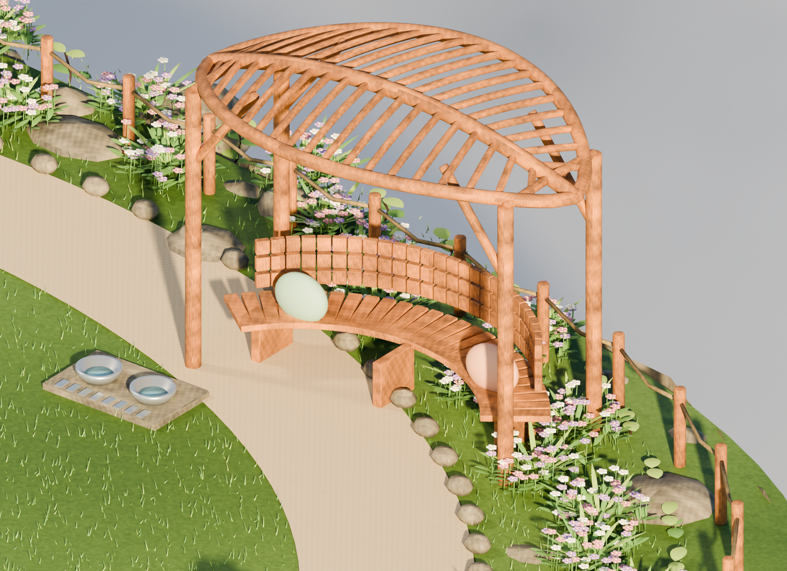

派特岛 / 中央公共乐园 / 第二版
自然木石，温柔的游乐场
四座生活岛继续沿用。中央掌垫岛以开阔草坪和环形散步路径组织八处设施：草坡猫耳隧道、低桥、花朵跳圈、攀爬树屋、遮阴座椅、饮水点、玩具柜和入口。
本页分开展示视觉目标与真实三维成果。概念图由 AI 生成；下方精细母版通过 Blender MCP 制作，尚未替换线上乐园。设施专属玩法、轻量版本与鸿蒙多人性能仍待完成。
01 / 整体效果概念

内置 imagegen 生成的视觉目标，不是游戏截图。主要确定材质、氛围与设施语言。
02 / 设施细节概念

与整体图保持一致的细节参考；图中尺寸与结构以实际设计文件为准。
03 / 布局与尺寸

虚拟场景设计，单位米；四座生活岛保持现有资产。尺寸为设计名义值，详见 layout-detailed.json。
04 / Blender MCP 精细母版

真实三维渲染：双隧道、分层树屋、叶脉遮棚、中央树景、草簇、花境与垂藤。

贯通隧道与草坡近景。
设施研究图（隐藏树冠以便检查）：叶形踏台、连续阶梯、螺旋麻绳与双出口木屋。
设施研究图（隐藏树冠以便检查）：叶形外缘、主梁、弧形肋条与座椅连接。
05 / 旋转检查实际模型
拖动旋转，滚轮或双指缩放。精细母版文件较大，仅用于设计审阅。
尚未加载
可编辑精细 Blender 工程 · 精细 GLB 模型 · 尺寸数据 · 构建报告 · 图像提示词